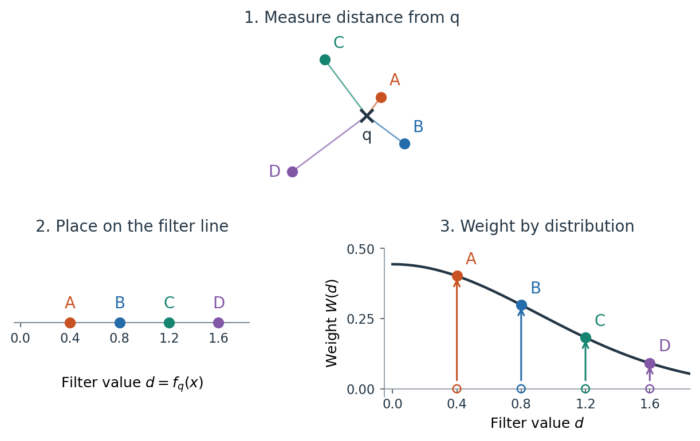
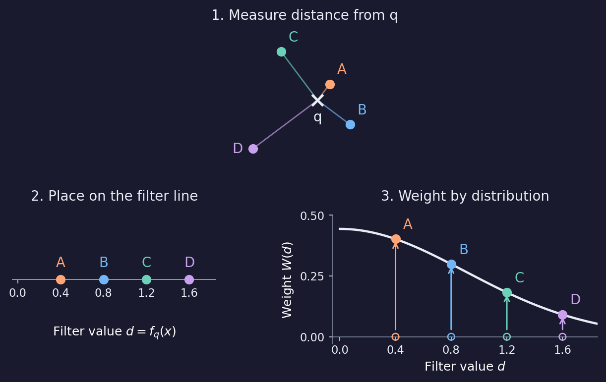
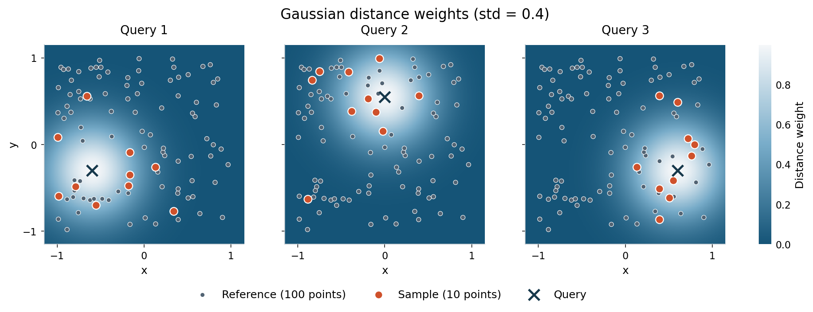
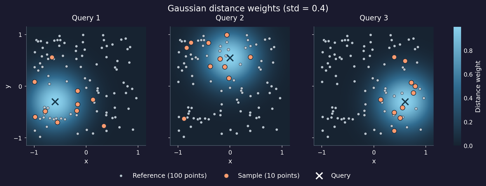
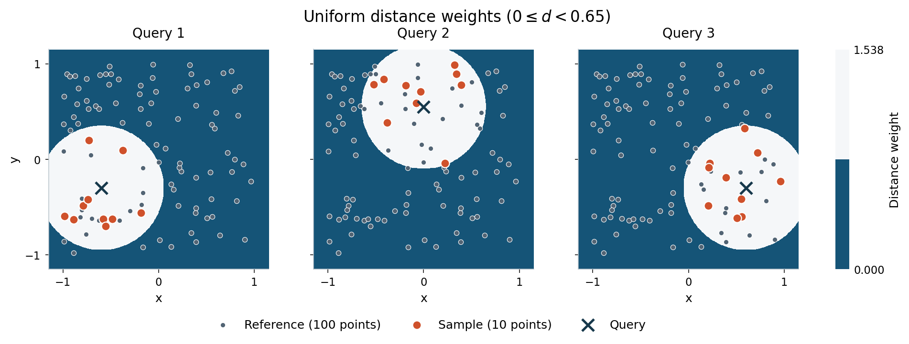
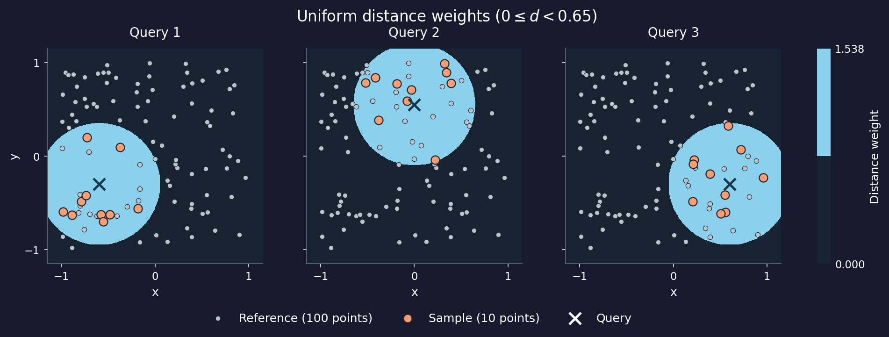
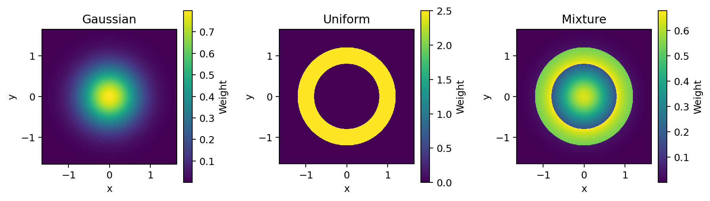
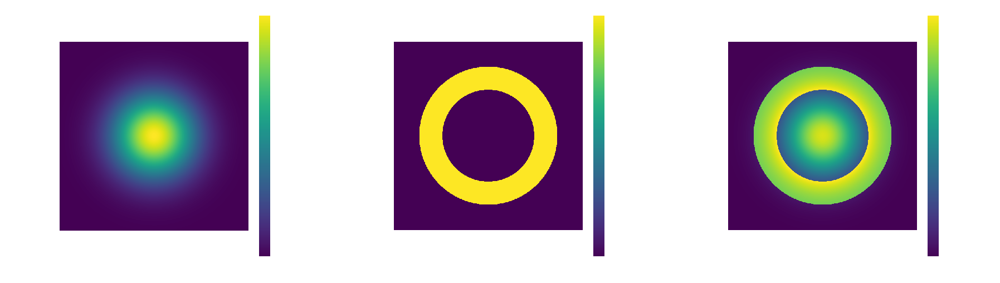

Relative subsampling#
Relative subsampling starts with two datasets: a reference dataset \(\mathcal{R}\), from which points are sampled, and a query dataset \(\mathcal{Q}\). We draw samples from \(\mathcal{R}\) for each query point \(q \in \mathcal{Q}\). The two datasets live in the same space, but neither needs to be a subset of the other. In practice, however, the two datasets are often the same set, or the query dataset is a subset of the reference dataset.
subsample_relative() implements the relative
construction of Agerberg, Chachólski, and Ramanujam [1],
with additional sampling options.
For uniform sampling, see Subsampling. For the underlying data representations, see Point clouds and distance matrices. Shared sampling options are documented in Shared subsampling options.
Filter functions and weights#
We assign a filter function \(f_q \colon \mathcal{R} \to \mathbb{R}\) to each query point \(q \in \mathcal{Q}\). This function assigns a scalar value \(f_q(x)\) to each reference point \(x \in \mathcal{R}\). When \(\mathcal{Q}, \mathcal{R} \subseteq \mathbb{R}^n\), the simplest choice is the Euclidean distance \(f_q(x) = \lVert x - q \rVert_2\) from the query point. A weight function \(W \colon \mathbb{R} \to [0, \infty)\) then maps that value to a nonnegative sampling weight:
Currently, stablebear only supports distance filtering, \(f_q(x) = d(q, x)\): Euclidean distance for a point cloud, or the stored pairwise distance for a distance matrix. For additional examples of filter functions, see Agerberg et al. [1].
See Distributions for the available weight functions and their parameters.
The figure below follows four reference points from coordinates to filter
values and weights, using a
Gaussian distribution.




Show code
import matplotlib.pyplot as plt
import numpy as np
import stablebear as sb
def plot_filter_function(*, dark=False):
query = np.array([0.0, 0.0])
points = np.array([
[0.24, 0.32], # A: distance 0.4
[0.64, -0.48], # B: distance 0.8
[-0.72, 0.96], # C: distance 1.2
[-1.28, -0.96], # D: distance 1.6
])
distances = np.linalg.norm(points - query, axis=1)
std = 0.9
distribution = sb.distributions.Gaussian(std=std)
weights = distribution.weight(distances)
ink = "#e7edf5" if dark else "#253746"
muted = "#8996a8" if dark else "#7b8894"
colors = (["#ffa576", "#73b6f5", "#6bd1b8", "#c8a0ee"] if dark else
["#c95223", "#246caa", "#168570", "#8257a6"])
# Two rows keep text readable at the documentation column's laptop width.
fig = plt.figure(figsize=(7.2, 5.6))
grid = fig.add_gridspec(2, 2, height_ratios=[1, 1], width_ratios=[1, 1.3])
cloud_ax = fig.add_subplot(grid[0, :])
line_ax = fig.add_subplot(grid[1, 0])
weight_ax = fig.add_subplot(grid[1, 1])
fig.subplots_adjust(left=0.06, right=0.97, bottom=0.22, top=0.84,
wspace=0.5, hspace=0.4)
# Keep labels about eight points from their markers, including diagonals.
# Each point keeps its letter and color throughout the construction.
for point, label, color in zip(points, "ABCD", colors):
cloud_ax.plot([query[0], point[0]], [query[1], point[1]],
color=color, linewidth=1.1, alpha=0.65)
cloud_ax.scatter(*point, s=45, color=color, zorder=3)
cloud_ax.annotate(label, point,
xytext=(-8, 0) if label == "D" else (6, 6),
textcoords="offset points",
ha="right" if label == "D" else "left",
va="center" if label == "D" else "bottom",
color=color, fontsize=11)
cloud_ax.scatter(*query, marker="x", s=80, linewidths=2, color=ink, zorder=4)
cloud_ax.annotate("q", query, xytext=(0, -8), textcoords="offset points",
ha="center", va="top", fontsize=11, color=ink)
cloud_ax.set(xlim=(-1.55, 1.05), ylim=(-1.25, 1.3), aspect="equal")
cloud_ax.set_axis_off()
cloud_ax.set_title("1. Measure distance from q", fontsize=11, pad=12, color=ink)
line_ax.set(xlim=(-0.05, 1.85), ylim=(-0.55, 0.55), yticks=[],
xticks=[0, 0.4, 0.8, 1.2, 1.6], xlabel=r"Filter value $d = f_q(x)$")
line_ax.spines[["left", "right", "top"]].set_visible(False)
line_ax.spines["bottom"].set_position(("data", 0))
line_ax.spines["bottom"].set_color(muted)
line_ax.xaxis.set_label_coords(0.5, 0.15)
line_ax.set_title("2. Place on the filter line", fontsize=11, pad=12, color=ink)
for distance, label, color in zip(distances, "ABCD", colors):
line_ax.scatter(distance, 0, s=45, color=color, zorder=3)
line_ax.annotate(label, (distance, 0), xytext=(0, 8),
textcoords="offset points", ha="center", va="bottom",
color=color, fontsize=11)
d = np.linspace(0, 1.85, 400)
weight_ax.plot(d, distribution.weight(d), color=ink, linewidth=1.8)
for distance, weight, label, color in zip(distances, weights, "ABCD", colors):
weight_ax.scatter(distance, 0, s=30, facecolors="none", edgecolors=color, zorder=3)
weight_ax.annotate("", xy=(distance, weight), xytext=(distance, 0.02),
arrowprops={"arrowstyle": "->", "color": color, "lw": 1.2})
weight_ax.scatter(distance, weight, s=45, color=color, zorder=4)
weight_ax.annotate(label, (distance, weight), xytext=(6, 6),
textcoords="offset points", ha="left", va="bottom",
color=color, fontsize=11)
weight_ax.set(xlim=(-0.05, 1.85), ylim=(-0.03, 0.5),
xticks=[0, 0.4, 0.8, 1.2, 1.6], yticks=[0, 0.25, 0.5],
xlabel=r"Filter value $d$", ylabel=r"Weight $W(d)$")
weight_ax.spines[["top", "right"]].set_visible(False)
weight_ax.spines["bottom"].set_position(("data", 0))
for spine in weight_ax.spines.values():
spine.set_color(muted)
spine.set_linewidth(0.6)
weight_ax.set_title("3. Weight by distribution", fontsize=11, pad=12, color=ink)
for ax in (line_ax, weight_ax):
ax.tick_params(length=3, width=0.6, labelsize=9, colors=ink)
ax.grid(False)
return fig
fig = plot_filter_function()
plt.show()
For the distance filter shown here, each point’s distance from query q
becomes its value on the one-dimensional filter line. Vertical arrows connect these filter values
to their Gaussian(0, 0.9) weights. Letters and colors identify the same
point in all three panels. Dividing the four weights by their sum gives the
sampling probabilities. Points close to q receive larger weights and are
more likely to be sampled.
Passing reference and query datasets#
Pass the reference dataset as reference and specify the queries with
query. For point clouds R and Q, the call is:
import stablebear as sb
from stablebear.distributions import Gaussian
samples = sb.random.subsample_relative(
reference=R,
query=Q,
distribution=Gaussian(std=0.5),
n_points=10, # Requested number of points per sample
n_samples=5, # Number of samples per query point
)
n_points sets the requested sample size; n_samples sets how many
independent samples to draw for each query point.
The result has shape (Q.shape[0], 5): five samples per query, with ten
points each. For example, one can loop over the queries and samples to print
the sampled points:
import numpy as np
for i in range(samples.shape[0]):
for j in range(samples.shape[1]):
sample = samples[i, j]
print(f"Query {i}, sample {j}:")
print(np.asarray(sample))
assert sample.shape == (10, R.shape[1])
The query argument accepts these forms:
|
Queries used |
|---|---|
|
The rows of |
A one-dimensional integer list, array, or
|
The reference points at those indices, in the supplied order. |
|
Every reference point, in reference order. |
For a DistanceMatrix reference, use index
queries or omit query.
Query index i uses the stored distances D[i, j] to reference points
j. Each sample is a principal submatrix in drawn index order, as in
uniform subsampling.
Choosing distributions#
See Distributions for Gaussian and
Uniform weight functions and
mixtures. For example:
G = sb.distributions.Gaussian(std=0.5)
U = sb.distributions.Uniform(start=1.0, end=2.0)
mixture = sb.distributions.Mixture([G, U], coefficients=[0.3, 0.7])
A mixture is one distribution. Passing distribution=[G, U, mixture] requests
three separate sampling runs for each query and returns shape
(n_query, 3, n_samples). Every nonempty list retains the distribution axis,
even a one-element list. A single distribution does not add an axis.
Queries change the selected region#
We use a synthetic dataset of 100 reference points and
Gaussian(0, 0.4) weights to compare samples at three query locations.




Show code
import matplotlib.pyplot as plt
from matplotlib.colors import LinearSegmentedColormap, ListedColormap
import numpy as np
import stablebear as sb
from stablebear.plotting import plot_distance_weight_heatmap
def plot_relative_subsamples(*, uniform=False, dark=False):
point_color = "#b8c5cf" if dark else "#526474"
selected_color = "#ff9c70" if dark else "#cf512b"
query_color = "#16384b"
outline_color = "#202936" if dark else "#ffffff"
rng = np.random.default_rng(12)
points = rng.uniform(-1, 1, size=(100, 2))
queries = np.array([[-0.6, -0.3], [0.0, 0.55], [0.6, -0.3]])
if uniform:
distribution = sb.distributions.Uniform(start=0, end=0.65)
title = r"Uniform distance weights ($0 \leq d < 0.65$)"
else:
distribution = sb.distributions.Gaussian(std=0.4)
title = "Gaussian distance weights (std = 0.4)"
peak = distribution.weight(0.0)
samples = sb.random.subsample_relative(
sb.PointCloud(points), queries, n_points=10,
distribution=distribution,
generator=sb.random.Generator(seed=5),
)
extent = (-1.15, 1.15, -1.15, 1.15)
# Higher weights are lighter in both themes, with a wide luminance range.
field_colors = (["#172331", "#316c90", "#8bd1ed"] if dark else
["#155477", "#78acc9", "#f5f7f9"])
cmap = (ListedColormap([field_colors[0], field_colors[-1]]) if uniform else
LinearSegmentedColormap.from_list("distance_weight", field_colors))
fig, axes = plt.subplots(1, 3, figsize=(11, 4), sharex=True, sharey=True)
for i, ax in enumerate(axes):
heatmap = plot_distance_weight_heatmap(
distribution, query=queries[i], extent=extent, ax=ax,
cmap=cmap, vmin=0, vmax=peak, zorder=0,
)
selected = np.asarray(samples[i, 0])
ax.scatter(points[:, 0], points[:, 1], s=17, color=point_color,
edgecolors=outline_color, linewidths=0.45,
label="Reference (100 points)", zorder=2)
ax.scatter(selected[:, 0], selected[:, 1], s=52, color=selected_color,
edgecolors=outline_color, linewidths=0.9,
label="Sample (10 points)", zorder=3)
ax.scatter(*queries[i], s=100, color=query_color, marker="x",
linewidths=2,
label="Query", zorder=4)
ax.set(title=f"Query {i + 1}", xlabel="x", aspect="equal",
xlim=(-1.15, 1.15), ylim=(-1.15, 1.15),
xticks=[-1, 0, 1], yticks=[-1, 0, 1])
ax.grid(False)
ax.spines[["top", "right"]].set_visible(False)
for spine in ax.spines.values():
spine.set_color("#617080" if dark else "#b7c2ca")
spine.set_linewidth(0.6)
ax.tick_params(length=3, width=0.6, labelsize=9)
ax.set_title(f"Query {i + 1}", fontsize=11, pad=10)
axes[0].set_ylabel("y")
handles, labels = axes[0].get_legend_handles_labels()
legend = fig.legend(handles, labels, loc="lower center", ncol=3, frameon=False,
bbox_to_anchor=(0.47, 0.01))
# The legend sits on the page background rather than the heatmap peak.
legend.legend_handles[-1].set_color("#ffffff" if dark else "#16384b")
fig.suptitle(title, y=0.98, fontsize=13)
fig.subplots_adjust(left=0.06, right=0.87, bottom=0.22, top=0.86,
wspace=0.12)
colorbar_ax = fig.add_axes((0.9, 0.22, 0.015, 0.64))
colorbar = fig.colorbar(heatmap, cax=colorbar_ax, label="Distance weight",
ticks=[0, peak] if uniform else None)
colorbar.outline.set_visible(False)
colorbar.ax.tick_params(length=0, labelsize=9)
return fig
Each cross marks a query, separate from the reference points shown as small gray circles. Larger orange circles show one sample per query. Moving the query shifts the region of larger weights and concentrates the sample near its new location.
Lighter shading indicates larger Gaussian weights, with the same color scale in every panel. These are weights evaluated at distances, not probabilities over the plane; sampling normalizes the weights at the reference points only.
Uniform distance weights#
We now use Uniform(start=0, end=0.65) with the same reference point cloud
and queries, drawing ten points without replacement for each query.




Show code
import matplotlib.pyplot as plt
from matplotlib.colors import LinearSegmentedColormap, ListedColormap
import numpy as np
import stablebear as sb
from stablebear.plotting import plot_distance_weight_heatmap
def plot_relative_subsamples(*, uniform=False, dark=False):
point_color = "#b8c5cf" if dark else "#526474"
selected_color = "#ff9c70" if dark else "#cf512b"
query_color = "#16384b"
outline_color = "#202936" if dark else "#ffffff"
rng = np.random.default_rng(12)
points = rng.uniform(-1, 1, size=(100, 2))
queries = np.array([[-0.6, -0.3], [0.0, 0.55], [0.6, -0.3]])
if uniform:
distribution = sb.distributions.Uniform(start=0, end=0.65)
title = r"Uniform distance weights ($0 \leq d < 0.65$)"
else:
distribution = sb.distributions.Gaussian(std=0.4)
title = "Gaussian distance weights (std = 0.4)"
peak = distribution.weight(0.0)
samples = sb.random.subsample_relative(
sb.PointCloud(points), queries, n_points=10,
distribution=distribution,
generator=sb.random.Generator(seed=5),
)
extent = (-1.15, 1.15, -1.15, 1.15)
# Higher weights are lighter in both themes, with a wide luminance range.
field_colors = (["#172331", "#316c90", "#8bd1ed"] if dark else
["#155477", "#78acc9", "#f5f7f9"])
cmap = (ListedColormap([field_colors[0], field_colors[-1]]) if uniform else
LinearSegmentedColormap.from_list("distance_weight", field_colors))
fig, axes = plt.subplots(1, 3, figsize=(11, 4), sharex=True, sharey=True)
for i, ax in enumerate(axes):
heatmap = plot_distance_weight_heatmap(
distribution, query=queries[i], extent=extent, ax=ax,
cmap=cmap, vmin=0, vmax=peak, zorder=0,
)
selected = np.asarray(samples[i, 0])
ax.scatter(points[:, 0], points[:, 1], s=17, color=point_color,
edgecolors=outline_color, linewidths=0.45,
label="Reference (100 points)", zorder=2)
ax.scatter(selected[:, 0], selected[:, 1], s=52, color=selected_color,
edgecolors=outline_color, linewidths=0.9,
label="Sample (10 points)", zorder=3)
ax.scatter(*queries[i], s=100, color=query_color, marker="x",
linewidths=2,
label="Query", zorder=4)
ax.set(title=f"Query {i + 1}", xlabel="x", aspect="equal",
xlim=(-1.15, 1.15), ylim=(-1.15, 1.15),
xticks=[-1, 0, 1], yticks=[-1, 0, 1])
ax.grid(False)
ax.spines[["top", "right"]].set_visible(False)
for spine in ax.spines.values():
spine.set_color("#617080" if dark else "#b7c2ca")
spine.set_linewidth(0.6)
ax.tick_params(length=3, width=0.6, labelsize=9)
ax.set_title(f"Query {i + 1}", fontsize=11, pad=10)
axes[0].set_ylabel("y")
handles, labels = axes[0].get_legend_handles_labels()
legend = fig.legend(handles, labels, loc="lower center", ncol=3, frameon=False,
bbox_to_anchor=(0.47, 0.01))
# The legend sits on the page background rather than the heatmap peak.
legend.legend_handles[-1].set_color("#ffffff" if dark else "#16384b")
fig.suptitle(title, y=0.98, fontsize=13)
fig.subplots_adjust(left=0.06, right=0.87, bottom=0.22, top=0.86,
wspace=0.12)
colorbar_ax = fig.add_axes((0.9, 0.22, 0.015, 0.64))
colorbar = fig.colorbar(heatmap, cax=colorbar_ax, label="Distance weight",
ticks=[0, peak] if uniform else None)
colorbar.outline.set_visible(False)
colorbar.ax.tick_params(length=0, labelsize=9)
return fig
fig = plot_relative_subsamples(uniform=True)
plt.show()
The Uniform weights give a sharp cutoff: the light disk has weight
\(1 / 0.65 \approx 1.538\) for distances 0 <= d < 0.65, and the
surrounding background has weight zero. Reference points inside each disk
have equal sampling weight. Points outside the disk will not be selected.
Sample size and count#
n_points is the positive number of draws requested per sample.
n_samples is the positive number of samples generated for each
query/distribution pair, defaulting to one. Samples are independent, so a
reference point can appear in several samples (even when sampling without
replacement).
The sample axis follows the query and optional distribution axes:
(n_query, n_samples) for a single distribution, or
(n_query, n_distributions, n_samples) for a list. Empty and partial
samples retain those axes.
Eligible points and reporting#
See Shared subsampling options for replace,
allow_partial, discard_duplicates, and
generator, as well as inspecting selected indices.
For relative subsampling, a reference point is eligible when it has positive
weight for a query/distribution pair. A point at infinite distance from the
query has zero weight for every distribution, including unbounded Uniform
distributions. Each pair is checked independently;
an error under allow_partial="no" identifies the failing pair.
Use replace=True, allow_partial="drop" to require a minimum number of
eligible points and draw with replacement, as in Step B1 of Agerberg et al.
[1].
If the query set is empty, the result has shape (0, n_samples) or
(0, n_distributions, n_samples).
Persistence of relative subsamples#
The relative subsampling tutorial shows the reference and query points, sampled point clouds, individual stable ranks, and their averages. It averages over the sample axis while retaining the query, distribution, and homology axes.
For a distance-matrix reference, the same pipeline starts with, for example,
query=sb.indices([0, 5, 10]). The returned
DistanceMatrixTensor has the same axis
conventions.
Heatmaps#
Heatmaps help visualize how a distribution weights the nonnegative filter
values used by subsample_relative(). With distance
filtering, only the part of the distribution at nonnegative filter values
contributes; the part at negative values is discarded.
plot_distance_weight_heatmap() creates a grid and plots
weights against distance from query, which defaults to the origin.
Pass ax to draw on an existing Matplotlib axes. The helper chooses bounds
automatically from distribution.plot_range(). The heatmap is centered on
query and includes
a 10% margin. Unbounded ranges require an explicit extent.
Use extent=(xmin, xmax, ymin, ymax) to override the bounds and resolution
to set the number of pixels per axis (default 512). The helper returns a
Matplotlib image for adding a colorbar or adjusting the color scale. Each panel below has its
own color scale. The colors show distribution weights evaluated at distances,
not a probability density over the plane.




Show code
import matplotlib.pyplot as plt
import stablebear as sb
from stablebear.plotting import plot_distance_weight_heatmap
def plot_weight_heatmaps():
gaussian = sb.distributions.Gaussian(std=0.5)
uniform = sb.distributions.Uniform(0.8, 1.2)
mixture = sb.distributions.Mixture([gaussian, uniform], [0.8, 0.2])
extent = (-1.65, 1.65, -1.65, 1.65)
fig, axes = plt.subplots(1, 3, figsize=(10, 3.3), layout="constrained")
for ax, distribution, title in zip(
axes, [gaussian, uniform, mixture], ["Gaussian", "Uniform", "Mixture"]
):
heatmap = plot_distance_weight_heatmap(distribution, extent=extent, ax=ax)
ax.set(title=title, xlabel="x", ylabel="y", aspect="equal")
fig.colorbar(heatmap, ax=ax, label="Weight", shrink=0.75)
return fig
fig = plot_weight_heatmaps()
plt.show()